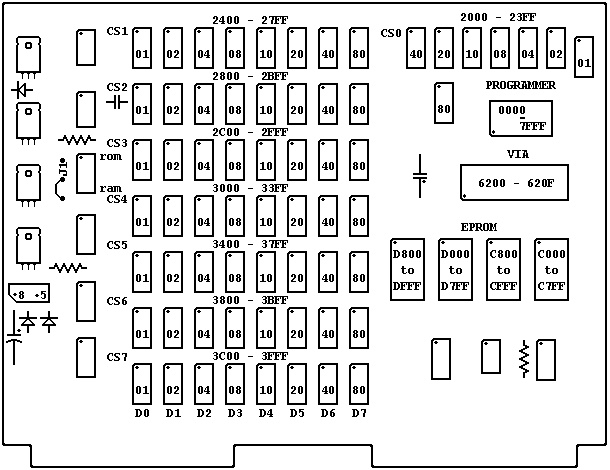

Memory Plus manual
 MEMORY PLUS Manual By Lee Davison
MEMORY PLUS Manual By Lee Davison

 Page 19
Page 19
Memory Organization with RAM selected at "2K" and ROM 8elected at "CK".

The dot in one corner of each IC chip and Header indicates the proper location
of pin 1. The Header has two corners marked, one labelled +5 and one labelled
+8. These indicate the proper orientation of the Header when the power supply
is providing a regulated +5 volts or an unregulated +8 to +10 volts.
ROM and RAM show the location of the switches used to select the base
address for the ROM and RAM memories.
J1 marks the location of the jumper which must be changed if ROM is placed to
start at E000. The line shown is the etched jumper which causes interrupt
addresses (FFFA to FFFF) to select the KIM-1 Monitor interrupt vectors
(1FFA to 1FFF). This jumper must be removed and replaced by a jumper from the
dot near the J to the dot near the 1 if interrupts are to be decoded by the
high addresses.
Page 19
| Last page update: 8th December, 2002. |
e-mail me
 |
|